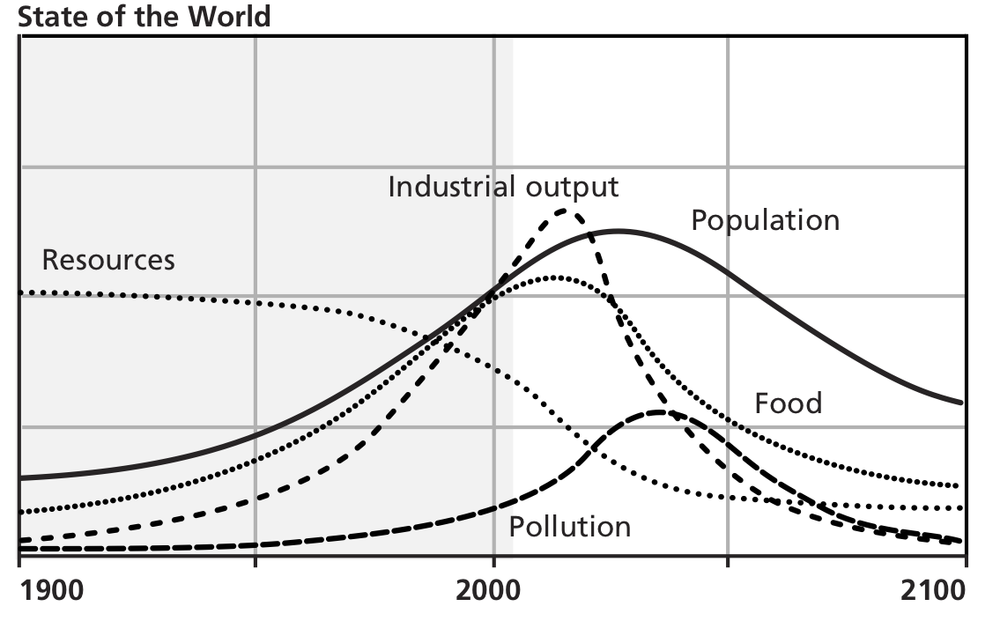
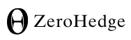

communities of
trees and people
communities of
cars and concrete n
What would a realistic future worth living be like?
Realistic futures

Note: this scenario optimistic.
It doesn't include climate change.
decentralized
society
research project
About me
Mathijs de Bruin
- Systems architect
- Philosopher
- Physicist
Overview
- Designing with Nature
- Creating a Forest Community
- Dreaming a Future
Overview
- Designing with Nature
- Creating a Forest Community
- Dreaming a Future
Designing with Nature
- Natural vs. synthetic systems
- Realistic futures
- Survival principles
Designing with Nature
- Natural vs. synthetic systems
- Realistic futures
- Survival principles
'Natural' (emergent)
vs.
'synthetic' (engineered)
What's the difference?
Natural systems
have
- High diversity
- Coopetition
- Many independent actors
- Scale-free self-similarity
Natural systems
have emergent
- Resilience/anti-fragility
- Self-organisation
- Self-replication
- Downward causality
Natural systems
are born to die
Individuals die for the whole to renew and survive.
On a long enough timeline the survival rate for everyone drop to zero.

death
is
inevitable
(duh)
Synthetic systems
have
- Low diversity
- Hierarchic structures
- Tight control loops
Synthetic systems
have emergent
- Fragility
- High control costs
- High scaling costs
- Failure propagation
Synthetic systems
deny death
Components survive to the detriment of their environment.
network ecology
graph of feedback loops
complexity
- non-linearity
- multi-scale
- many subsystems (agents)
complexity
- non-linearity
- multi-scale
- many subsystems (agents)
complexity
- non-linearity
- multi-scale
- many subsystems (agents)
complexity
- non-linearity
- multi-scale
- many subsystems (agents)
complexity (2)
- unpredictability (chaos)
- downward causality
- self-organization (emergence)
complexity (2)
- unpredictability (chaos)
- downward causality
- self-organization (emergence)
complexity (2)
- unpredictability (chaos)
- downward causality
- self-organization (emergence)
complexity (2)
- unpredictability (chaos)
- downward causality
- self-organization (emergence)
What does it mean!?
Examples
climate
feedbacks and complexity
economy
147 companies run the world
why?
- rare, significant perturbations
- feedback energy scales with deviation
- failure cascades
why?
- rare, significant perturbations
- feedback energy scales with deviation
- failure cascades
why?
- rare, significant perturbations
- feedback energy scales with deviation
- failure cascades